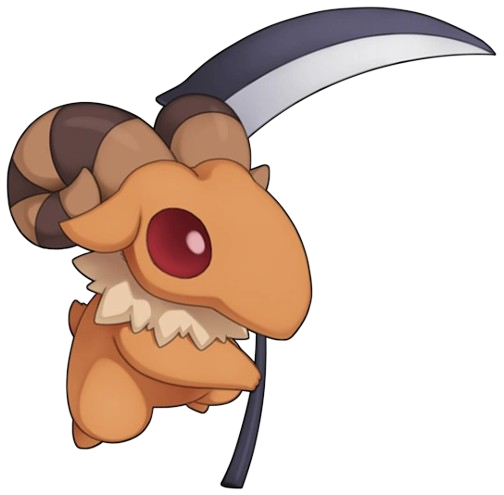

HOME
Classes
Classe Inicial:
Aprendiz
Superaprendiz
Hyper Novice
Primeiras Classes:
Arqueiro
Espadachim
Gatuno
Mago
Mercador
Noviço
Classes Expandidas:
Taekwon
Justiceiro
Ninja
Mestre Taekwons
Espiritualista
Insurgente
Mestre Estelar
Ceifador de Almas
Kagerou
Oboro
Night Watch
Sky Emperor
Soul Ascetic
Shinkiro/Shiranui
Segundas Classes:
Cavaleiro
Templario
Mercenário
Arruaceiro
Bruxo
Sábio
Ferreiro
Alquimista
Sacerdote
Monge
Caçador
Bardo/Odalisca
Transclasses:
Lorde
Paladino
Algoz
Desordeiro
Arquimago
Professor
Mestre-Ferreiro
Criador
Sumo Sacerdote
Mestre
Atirador de Elite
Menestrel/Cigana
Terceiras Classes:
Cavaleiro Rúnico
Guardião Real
Sicário
Renegado
Arcano
Feiticeiro
Mecânico
Bioquímico
Arcebispo
Shura
Sentinela
Trovador/Musa
Quartas Classes:
Dragon Knight
Imperial Guard
Shadow Cross
Abyss Chaser
Arch Mage
Elemental Master
Meister
Biolo
Cardinal
Inquisitor
Windhawk
Troubadour/Trouvere
Doram:
Invocador
Spirit Handler
Cidades
Rune Midgard:
Prontera
Izlude
Payon
Alberta
Morroc
Geffen
Al De Baran
Comodo
Umbala
Lutie
Schwartzwald:
Juno
Einbroch
Einbech
Lighthalzen
Hugel
Noviço
Arunafeltz:
Rachel
Veins
Ilha Esquecida
Ilhas Nação:
Amatsu
Kunlun
Louyang
Ayothaya
Moscóvia
Dewata
Brasilis
Porto Malaya
Malangdo
Rockridge
Além Midgard:
Manuka
El Dicastes
Mora
Esplendor
Eclage
ATRIBUTOS
DATABASE
BUILDS
SOBRE

Bem-vindo à WikiRag Internacional!
Somos a plataforma perfeita para pesquisar sobre qualquer coisa do nosso Ragzinho!